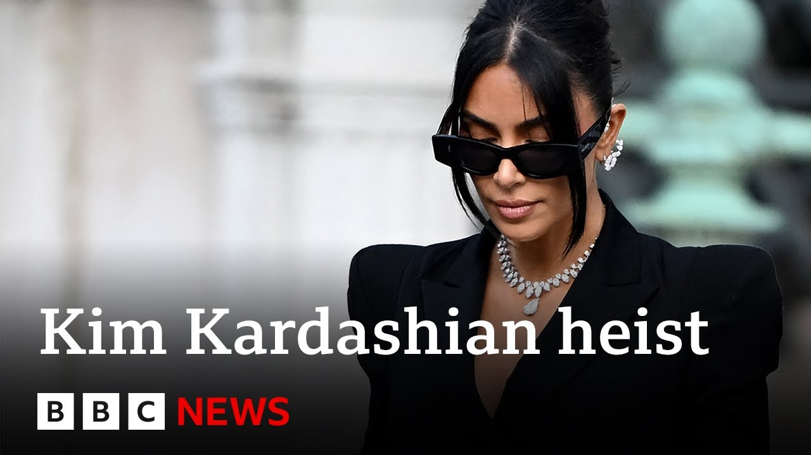

【巴黎金·卡戴珊抢劫案团伙被判有罪 | BBC新闻】
Summary: Eight people convicted in the 2016 Paris heist of Kim Kardashian's jewelry, receiving up to 8 years in prison, with most sentences suspended; two acquitted. Kardashian called it her most terrifying experience, while the elderly defendants sought leniency.
摘要： 八人因2016年巴黎抢劫金·卡戴珊珠宝案被判有罪，最高刑期八年，多数缓刑；两人无罪释放。卡戴珊称这是她最可怕的经历，而年迈被告请求宽大处理。

⏱️ Estimated Reading Time: 3 min
Eight people have been found guilty after the reality star Kim Kardashian was robbed at gunpoint of millions of dollars worth of jewelry in a Paris hotel nearly a decade ago.
真人秀明星金·卡戴珊近十年前在巴黎酒店遭持枪抢劫价值数百万美元的珠宝，八人现被判有罪。
They were given prison sentences of up to 8 years.
他们被判处最高八年的监禁。
The most of the terms were suspended.
其中多数刑期为缓刑。
Two people were acquitted.
两人获无罪释放。
Kim Kardashian says the robbery had been the most terrifying experience of her life.
金·卡戴珊称此次抢劫是她一生中最可怕的经历。
Andrew Harding has this report and a warning.
安德鲁·哈丁带来报道并发出提醒。
It does contain some flashing images.
内容包含部分闪烁画面。
In central Paris, justice at long last in the case of the Kardashian jewel heist.
巴黎市中心，卡戴珊珠宝抢劫案终于迎来正义裁决。
It was last week that Kim Kardashian, global celebrity in black and diamonds here, flew into the French capital to give evidence at the trial.
上周，全球名人金·卡戴珊一身黑衣钻石装扮飞抵法国首都出庭作证。
She described her terror that she would be raped or killed by the masked robbers who entered her Paris hotel room back in 2016.
她描述了2016年蒙面劫匪闯入巴黎酒店房间时，自己害怕遭强奸或杀害的恐惧。
But she also spoke of forgiveness.
但她也谈及宽恕。
And it is forgiveness or at least leniency that the accused were pleading for in court.
而被告们在法庭上恳求的正是宽恕或至少从轻发落。
Many of them are now elderly and sick.
他们中许多人如今年老多病。
Like 71-year-old Ununice Abbas, who's wrestling with Parkinson's.
比如71岁的尤尼斯·阿巴斯，他正与帕金森病抗争。
He's described the Kardashian jewel heist as a final job before retirement.
他将卡戴珊珠宝抢劫案称为退休前的最后一单。
I was hesitant.
我曾犹豫不决。
I thought I was too old, but in the end, I took up the challenge.
我以为自己太老了，但最终接受了挑战。
As soon as the job was done, I regretted it.
行动一结束我就后悔了。
Kardashian had been in Paris for fashion week.
卡戴珊当时为时装周来到巴黎。
The gang appears to have targeted her after seeing her with her jewelry on social media.
该团伙似乎是在社交媒体看到她佩戴珠宝后锁定她为目标。
She was bound and gagged at gunpoint before the thieves escaped.
劫匪持枪将她捆绑封口后逃离。
The stolen jewels themselves, gold and diamonds worth perhaps 6 million pounds were probably smuggled out of France, broken up and sold.
价值约600万英镑的被盗黄金钻石珠宝可能已被走私出境、拆解销赃。
They've never been found.
它们至今下落不明。
As for the gang, the jury found almost all of them guilty, but no more time in prison for any of the elderly criminals who've waited 9 years for justice.
陪审团认定该团伙几乎全员有罪，但这些等待九年才迎来审判的年迈罪犯无需再服刑。
There were probably two reasons.
原因可能有两个。
first the age of those people and second probably the time you know between u the facts and and and the trial.
首先是这些人年事已高，其次是案发与审判间隔时间过长。
As for Kim Kardashian in a statement she thanked French justice described the robbery as the most terrifying experience of her life and prayed for healing for all concerned.
金·卡戴珊在声明中感谢法国司法系统，称此次抢劫是她人生最恐怖经历，并祈愿所有相关人员得到疗愈。
Andrew Harding, BBC News, Paris.
BBC新闻安德鲁·哈丁于巴黎报道。